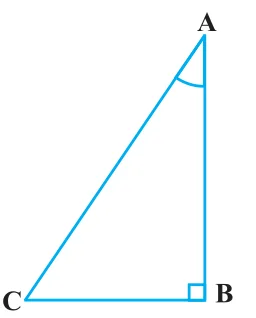

You may recall that an equation is called an identity when it is true for all values of the variables involved. Similarly, an equation involving trigonometric ratios of an angle is called a trigonometric identity, if it is true for all values of the angle(s) involved.

In this section, we will prove one trigonometric identity, and use it further to prove other useful trigonometric identities.
In \(\Delta\,\text{ABC}\), right-angled at B (see Fig. 8.21), we have:
\(\text{AB}^{2} + \text{BC}^{2} = \text{AC}^{2} \qquad (1)\)
Dividing each term of (1) by \(\text{AC}^{2}\), we get
\(\dfrac{\text{AB}^{2}}{\text{AC}^{2}} + \dfrac{\text{BC}^{2}}{\text{AC}^{2}} = \dfrac{\text{AC}^{2}}{\text{AC}^{2}}\)
i.e., \(\left(\dfrac{\text{AB}}{\text{AC}}\right)^{2} + \left(\dfrac{\text{BC}}{\text{AC}}\right)^{2} = \left(\dfrac{\text{AC}}{\text{AC}}\right)^{2}\)
i.e., \((\cos \text{A})^{2} + (\sin \text{A})^{2} = 1\)
i.e., \(\boldsymbol{\cos^{2} \text{A} + \sin^{2} \text{A} = 1} \qquad (2)\)
This is true for all A such that \(0^{\circ} \le \text{A} \le 90^{\circ}\). So, this is a trigonometric identity.
Let us now divide (1) by \(\text{AB}^{2}\). We get
\(\dfrac{\text{AB}^{2}}{\text{AB}^{2}} + \dfrac{\text{BC}^{2}}{\text{AB}^{2}} = \dfrac{\text{AC}^{2}}{\text{AB}^{2}}\)
or, \(\left(\dfrac{\text{AB}}{\text{AB}}\right)^{2} + \left(\dfrac{\text{BC}}{\text{AB}}\right)^{2} = \left(\dfrac{\text{AC}}{\text{AB}}\right)^{2}\)
i.e., \(\boldsymbol{1 + \tan^{2} \text{A} = \sec^{2} \text{A}} \qquad (3)\)
Is this equation true for \(\text{A} = 0^{\circ}\)? Yes, it is. What about \(\text{A} = 90^{\circ}\)? Well, tan A and sec A are not defined for \(\text{A} = 90^{\circ}\). So, (3) is true for all A such that \(0^{\circ} \le \text{A} \lt 90^{\circ}\).
Let us see what we get on dividing (1) by \(\text{BC}^{2}\). We get
\(\dfrac{\text{AB}^{2}}{\text{BC}^{2}} + \dfrac{\text{BC}^{2}}{\text{BC}^{2}} = \dfrac{\text{AC}^{2}}{\text{BC}^{2}}\)
i.e., \(\left(\dfrac{\text{AB}}{\text{BC}}\right)^{2} + \left(\dfrac{\text{BC}}{\text{BC}}\right)^{2} = \left(\dfrac{\text{AC}}{\text{BC}}\right)^{2}\)
i.e., \(\boldsymbol{\cot^{2} \text{A} + 1 = \operatorname{cosec}^{2} \text{A}} \qquad (4)\)
Note that cosec A and cot A are not defined for \(\text{A} = 0^{\circ}\). Therefore (4) is true for all A such that \(0^{\circ} \lt \text{A} \le 90^{\circ}\).
Using these identities, we can express each trigonometric ratio in terms of other trigonometric ratios, i.e., if any one of the ratios is known, we can also determine the values of other trigonometric ratios.
Let us see how we can do this using these identities. Suppose we know that \(\tan \text{A} = \dfrac{1}{\sqrt{3}}\). Then, \(\cot \text{A} = \sqrt{3}\).
Since, \(\sec^{2} \text{A} = 1 + \tan^{2} \text{A} = 1 + \dfrac{1}{3} = \dfrac{4}{3}, \ \sec \text{A} = \dfrac{2}{\sqrt{3}}\), and \(\cos \text{A} = \dfrac{\sqrt{3}}{2}\).
Again, \(\sin \text{A} = \sqrt{1 - \cos^{2} \text{A}} = \sqrt{1 - \dfrac{3}{4}} = \dfrac{1}{2}\). Therefore, cosec A = 2.
Example 9 :
Express the ratios cos A, tan A and sec A in terms of sin A.
Solution :
Since \(\cos^{2} \text{A} + \sin^{2} \text{A} = 1\), therefore,
\(\cos^{2} \text{A} = 1 - \sin^{2} \text{A}\), i.e., \(\cos \text{A} = \pm \sqrt{1 - \sin^{2} \text{A}}\)
This gives \(\cos \text{A} = \sqrt{1 - \sin^{2} \text{A}}\) (Why?)
Hence, \(\tan \text{A} = \dfrac{\sin \text{A}}{\cos \text{A}} = \dfrac{\sin \text{A}}{\sqrt{1 - \sin^{2} \text{A}}}\) and \(\sec \text{A} = \dfrac{1}{\cos \text{A}} = \dfrac{1}{\sqrt{1 - \sin^{2} \text{A}}}\)
Example 10 :
Prove that \(\sec \text{A} (1 - \sin \text{A})(\sec \text{A} + \tan \text{A}) = 1\).
Solution :
\(\text{LHS} = \sec \text{A} (1 - \sin \text{A})(\sec \text{A} + \tan \text{A}) = \left(\dfrac{1}{\cos \text{A}}\right)(1 - \sin \text{A})\left(\dfrac{1}{\cos \text{A}} + \dfrac{\sin \text{A}}{\cos \text{A}}\right)\)
\(= \dfrac{(1 - \sin \text{A})(1 + \sin \text{A})}{\cos^{2} \text{A}} = \dfrac{1 - \sin^{2} \text{A}}{\cos^{2} \text{A}}\)
\(= \dfrac{\cos^{2} \text{A}}{\cos^{2} \text{A}} = 1 = \text{RHS}\)
Example 11 :
Prove that \(\dfrac{\cot \text{A} - \cos \text{A}}{\cot \text{A} + \cos \text{A}} = \dfrac{\operatorname{cosec} \text{A} - 1}{\operatorname{cosec} \text{A} + 1}\)
Solution :
\(\text{LHS} = \dfrac{\cot \text{A} - \cos \text{A}}{\cot \text{A} + \cos \text{A}} = \dfrac{\dfrac{\cos \text{A}}{\sin \text{A}} - \cos \text{A}}{\dfrac{\cos \text{A}}{\sin \text{A}} + \cos \text{A}}\)
\(= \dfrac{\cos \text{A}\left(\dfrac{1}{\sin \text{A}} - 1\right)}{\cos \text{A}\left(\dfrac{1}{\sin \text{A}} + 1\right)} = \dfrac{\left(\dfrac{1}{\sin \text{A}} - 1\right)}{\left(\dfrac{1}{\sin \text{A}} + 1\right)} = \dfrac{\operatorname{cosec} \text{A} - 1}{\operatorname{cosec} \text{A} + 1} = \text{RHS}\)
Example 12 :
Prove that \(\dfrac{\sin \theta - \cos \theta + 1}{\sin \theta + \cos \theta - 1} = \dfrac{1}{\sec \theta - \tan \theta}\), using the identity \(\sec^{2} \theta = 1 + \tan^{2} \theta\).
Solution :
Since we will apply the identity involving \(\sec \theta\) and \(\tan \theta\), let us first convert the LHS (of the identity we need to prove) in terms of \(\sec \theta\) and \(\tan \theta\) by dividing numerator and denominator by \(\cos \theta\).
\(\text{LHS} = \dfrac{\sin \theta - \cos \theta + 1}{\sin \theta + \cos \theta - 1} = \dfrac{\tan \theta - 1 + \sec \theta}{\tan \theta + 1 - \sec \theta}\)
\(= \dfrac{(\tan \theta + \sec \theta) - 1}{(\tan \theta - \sec \theta) + 1} = \dfrac{\{(\tan \theta + \sec \theta) - 1\}\,(\tan \theta - \sec \theta)}{\{(\tan \theta - \sec \theta) + 1\}\,(\tan \theta - \sec \theta)}\)
\(= \dfrac{(\tan^{2} \theta - \sec^{2} \theta) - (\tan \theta - \sec \theta)}{\{\tan \theta - \sec \theta + 1\}\,(\tan \theta - \sec \theta)}\)
\(= \dfrac{-1 - \tan \theta + \sec \theta}{(\tan \theta - \sec \theta + 1)\,(\tan \theta - \sec \theta)}\)
\(= \dfrac{-1}{\tan \theta - \sec \theta} = \dfrac{1}{\sec \theta - \tan \theta}\),
which is the RHS of the identity, we are required to prove.